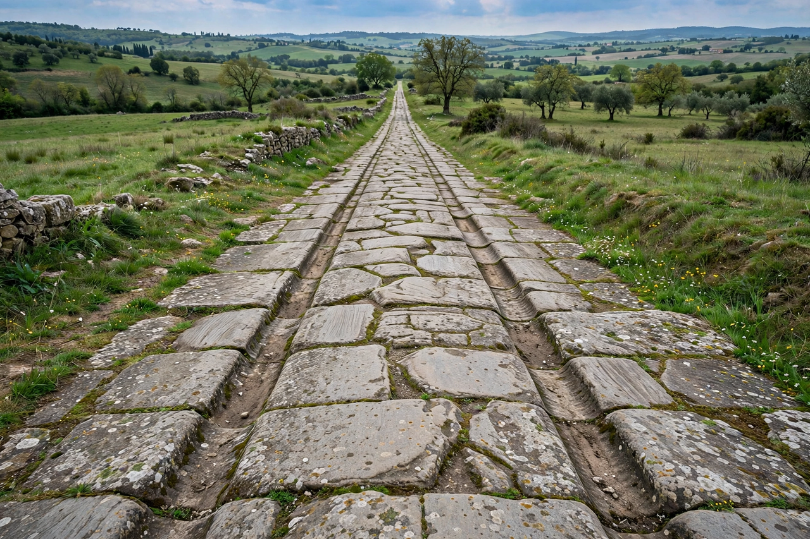

[Image placeholder: A preserved Roman road, built with a layered stone foundation]A **road** is a thoroughfare for the conveyance of traffic that mostly has an improved surface for use by vehicles (motorised and non-motorised) and pedestrians. Unlike streets, whose primary function is to serve the buildings along them, roads mainly function as channels for vehicles and pedestrians to travel between population centres — though in everyday English the terms are used interchangeably.
Modern roads are usually paved with asphalt or concrete and organised into hierarchies from local streets to controlled-access highways (motorways, freeways, autobahns). The world's largest national road network is that of the United States, followed by countries such as India and China.
Roads date to the earliest settled societies; the Roman roads of the Roman Empire, engineered with layered foundations, drainage and milestones, are famous for their durability. In the eighteenth and nineteenth centuries, turnpike trusts and engineers such as John McAdam (macadam surfacing) improved land travel, before railways and then motor cars drove the great road-building programmes of the twentieth century, including Germany's autobahns and the US Interstate Highway System from 1956.
A road's pavement structure layers a subgrade, base course and wearing surface designed for expected loads and climate. Design covers alignment, gradients, drainage, junctions, signage, markings and safety barriers; maintenance ranges from resurfacing to snow clearance. Environmental effects include habitat fragmentation, noise, runoff and the emissions of road traffic, and road transport is a major source of injuries worldwide.